Категории значений и семантика перемещения
lvalue, prvalue, xvalue, std::move и forwarding.
Value categories & Move Semantics
Value categories
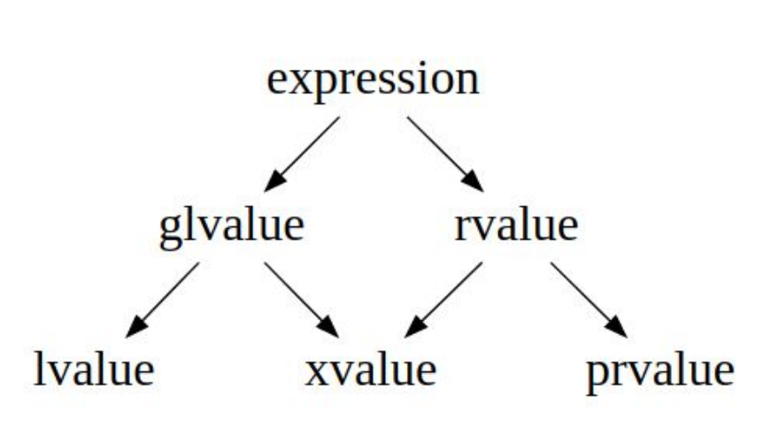
Lvalue (left value, «локаторное значение») — это выражение в языках C/C++, которое ссылается на конкретную область памяти (имеет адрес) и сохраняется после завершения текущей инструкции (имеет имя). Lvalue часто находится слева от знака присваивания (=), что позволяет изменять хранящееся в нем значение.
Rvalue (right value) в C++ — это выражение, представляющее собой временное, неименованное значение, которое обычно располагается справа от оператора присваивания. В отличие от lvalue, rvalue не имеет постоянного адреса в памяти, к которому можно обратиться, и часто уничтожается сразу после использования (например, литералы 42, временные объекты или результаты операций a + b).
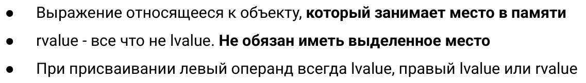
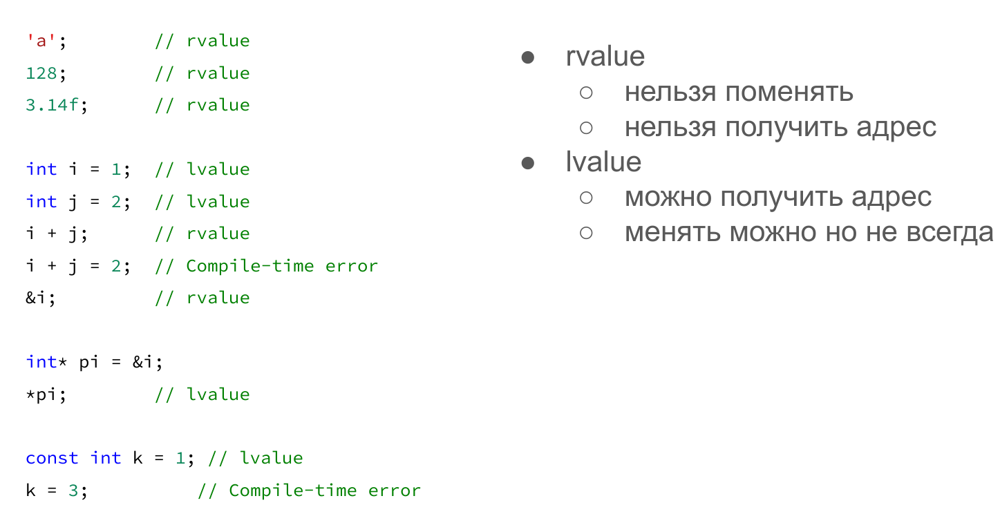
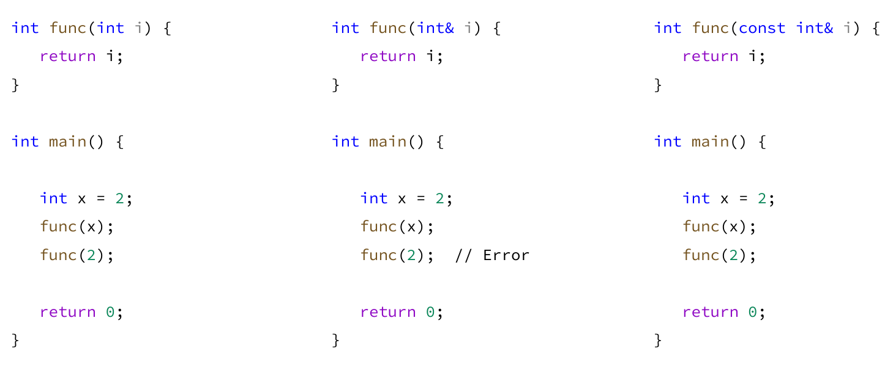
expression - выражения * - /
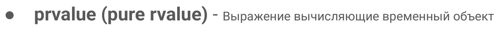
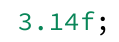
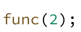
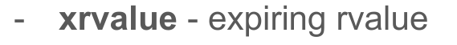
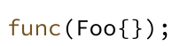
это объект у которого есть место в пяти но нет в нем какой-то переменнойRvalue reference
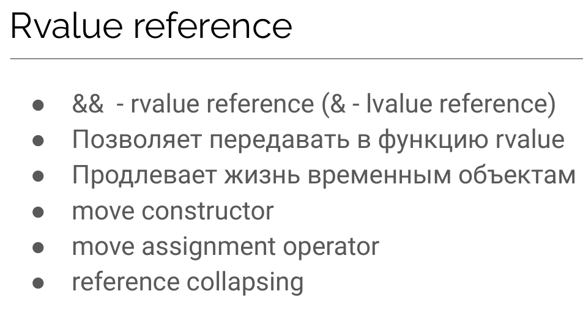
// Simple move constructor
A(A&& arg) : member(std::move(arg.member)) // the expression "arg.member" is lvalue
{}
// Simple move assignment operator
A& operator=(A&& other)
{
member = std::move(other.member);
return *this;
}std::move приводит выражение к ссылке на rvalue. Перенос ресурсов выполняет выбранный перемещающий конструктор или оператор присваивания.
Reference Collapsing (свертывание ссылок) в C++ — это правило, введенное в C++11, которое определяет, как компилятор обрабатывает ссылки на ссылки, возникающие в результате подстановки типов в шаблонах или использовании typedef/using.
В C++ напрямую объявлять ссылку на ссылку (например, int & & r;) запрещено, но такие конструкции могут появляться косвенно.
Возвращать rvalue-ссылку допустимо только при достаточном времени жизни объекта. Возвращение ссылки на локальный объект создаёт висячую ссылку.
Move constructor & move assignment
std::exchenge
int main() {
int x = 10;
std::exchange(x, 20);
std::cout << x;
}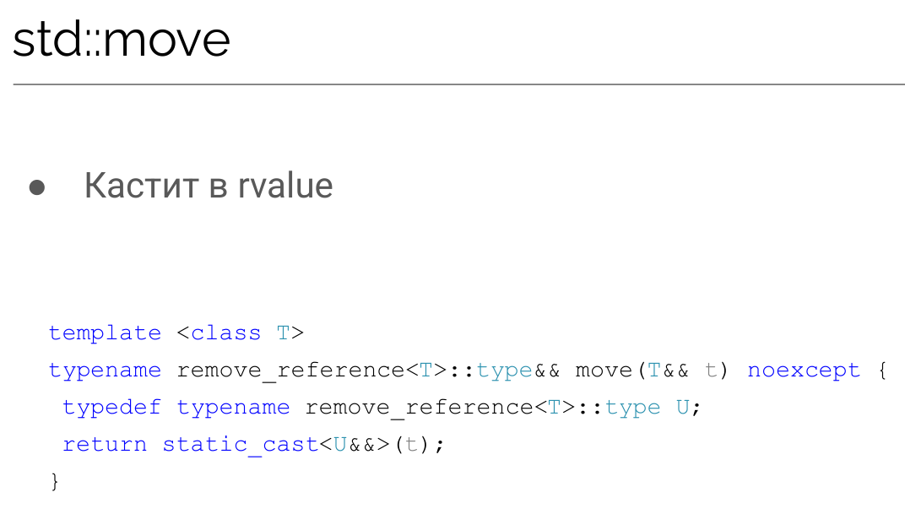
Copy-And-Swap Idiom
В идиоме copy-and-swap оператор присваивания обменивает состояние с подготовленной копией. Для реализации обмена часто используют перемещение.
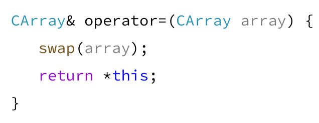
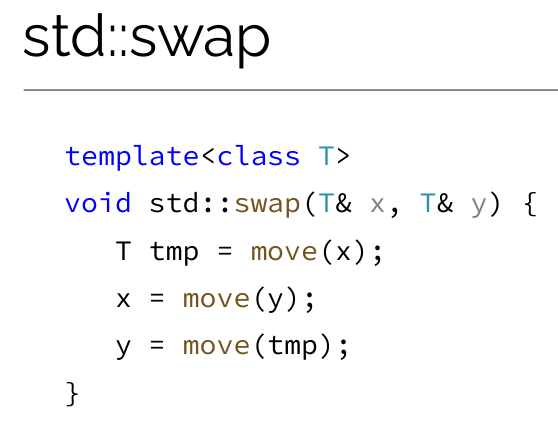
Reference collapsing
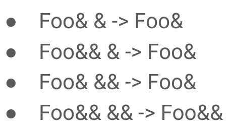
std::forward — это инструмент для идеальной передачи (perfect forwarding) аргументов в шаблонах. Она позволяет передать аргумент в другую функцию, сохранив его «природу»: был ли он временным объектом (rvalue) или именованной переменной (lvalue)
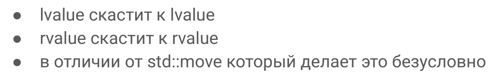
template <typename T>
void wrapper(T&& arg) {
// std::forward "решает", вызвать move или передать как обычную ссылку
target_function(std::forward<T>(arg));
}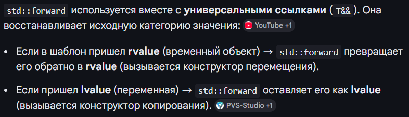
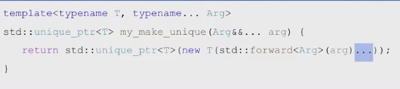
Многоточие ... обозначает пакет параметров или его раскрытие в зависимости от позиции.